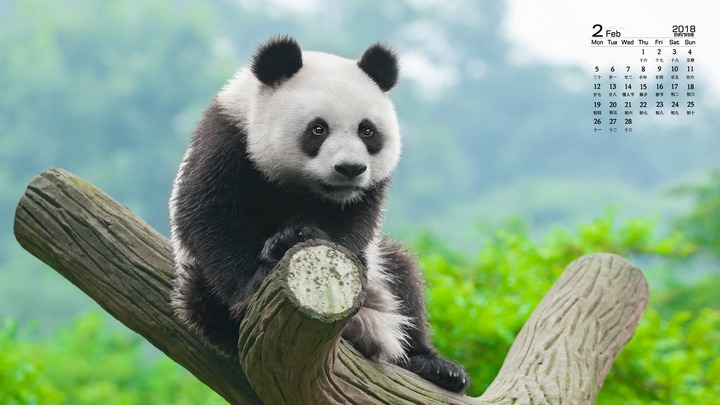
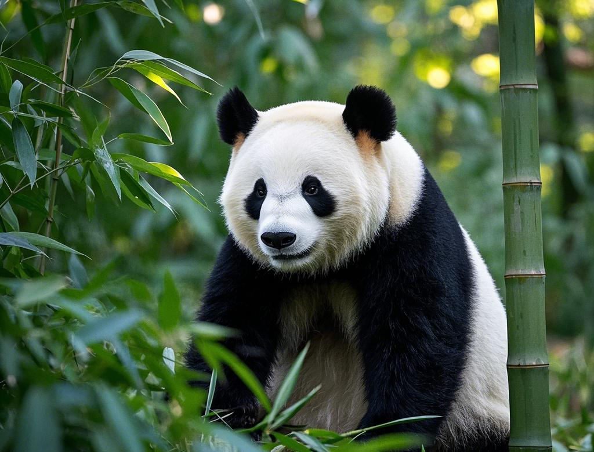
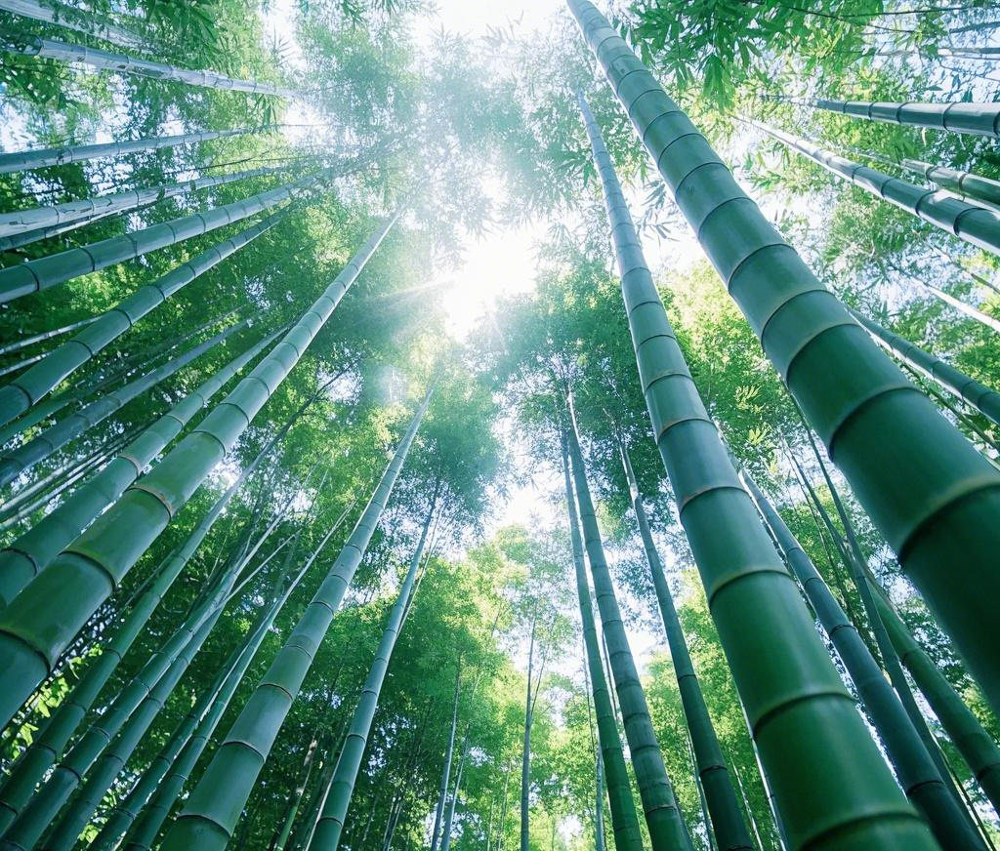
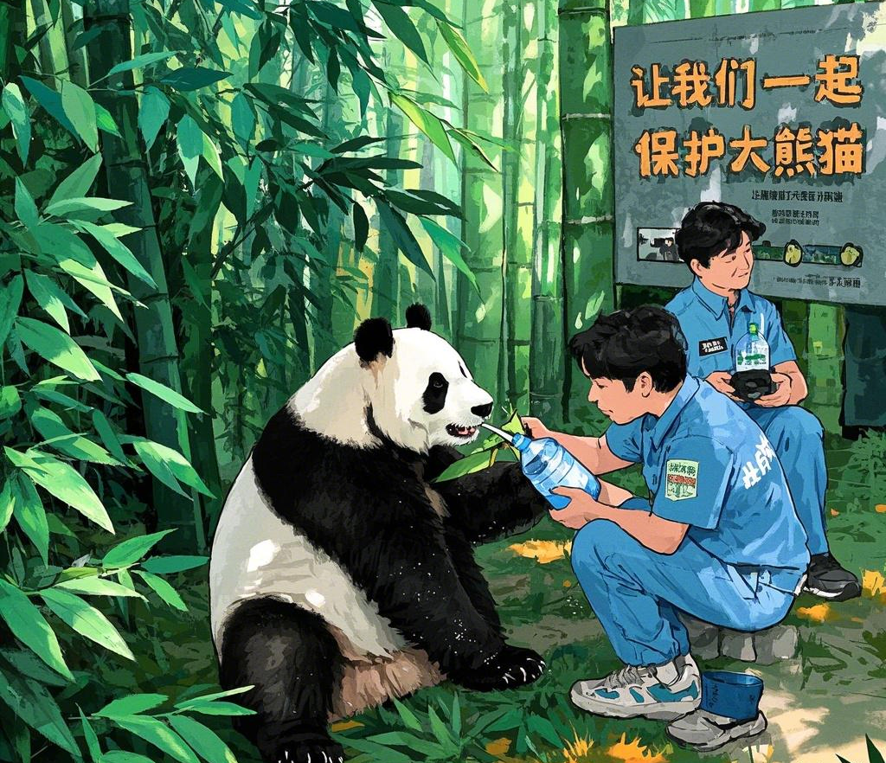

简介
大熊猫（学名：Ailuropoda melanoleuca），属于食肉目熊科，是一种以竹子为主食的哺乳动物。大熊猫是中国的国宝，也是世界自然基金会的标志性物种。大熊猫的身体特征非常独特，黑白相间的毛色使它们在全球范围内广受欢迎。尽管它们属于食肉目，但大熊猫的饮食主要以竹子为主，占其食物总量的99%。
栖息地
大熊猫主要生活在中国的四川、陕西和甘肃的山区。它们喜欢生活在海拔1200至3500米的竹林中，这些地区气候湿润，适合竹子的生长。大熊猫的栖息地通常包括茂密的森林和陡峭的山坡，这些地形为它们提供了丰富的食物来源和隐蔽的栖息环境。然而，由于人类活动的扩张，大熊猫的栖息地正在逐渐减少，这对它们的生存构成了严重威胁。
饮食
大熊猫的主要食物是竹子，但它们也会吃一些其他植物和小型动物。由于竹子的营养价值较低，大熊猫每天需要花费10至16小时进食，每天可以消耗12至38公斤的竹子。大熊猫的消化系统仍然保留着食肉动物的特征，因此它们无法完全消化竹子中的纤维素，只能吸收其中的少量营养。为了弥补营养的不足，大熊猫偶尔也会食用小型哺乳动物、鸟类或昆虫。
保护
由于栖息地的丧失和繁殖困难，大熊猫被列为濒危物种。中国政府和国际组织正在努力保护大熊猫及其栖息地。自20世纪80年代以来，中国建立了67个大熊猫自然保护区，覆盖了超过60%的大熊猫栖息地。此外，人工繁殖计划也在全球范围内展开，旨在增加大熊猫的数量并提高其遗传多样性。世界自然基金会（WWF）等国际组织也在积极参与大熊猫的保护工作，通过科学研究、公众教育和政策倡导来推动大熊猫的保护。
